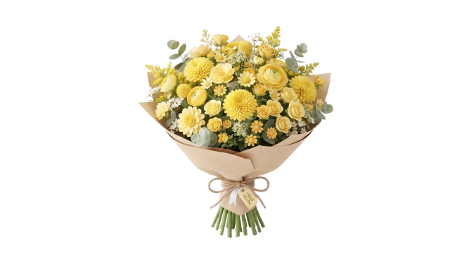

Tenés una carta
(Toca aquí para abrir)
Sé que no somos nada todavía, capaz esto no llegue a nada o capaz esto llegue a mucho, pero prefiero que el camino lo elija.
A pesar de que no seamos nada, hoy es un día especial y no podías quedarte sin tus...

¡Que tengas un lindo día!